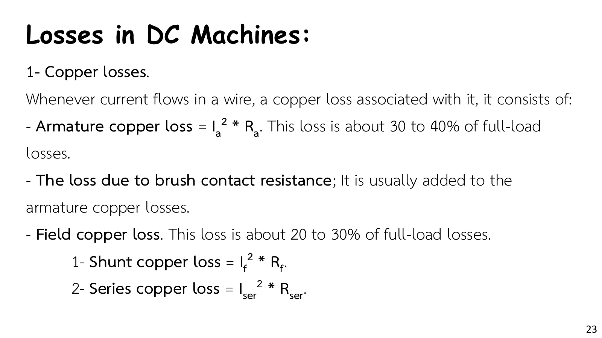
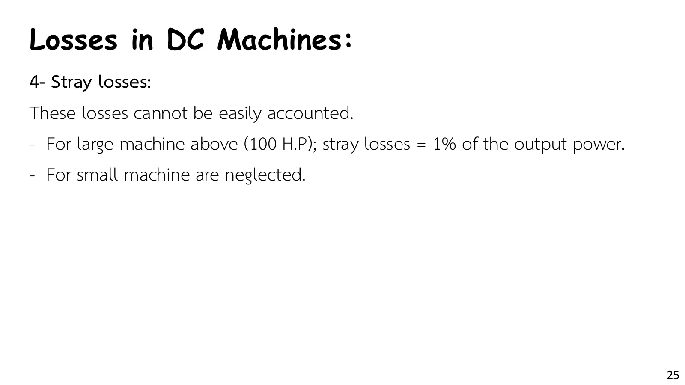
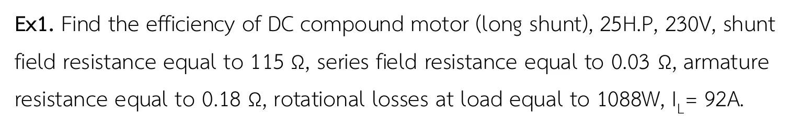
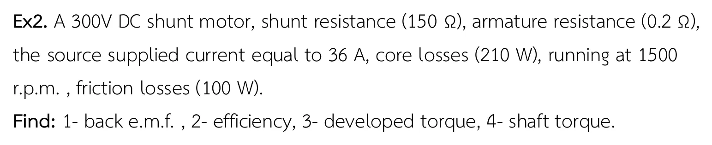
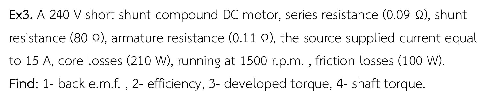

การไหลของกำลัง การสูญเสีย และประสิทธิภาพ From the line to the shaft: where the watts go
Power flow, losses and efficiency From the line to the shaft: where the watts go
กำลังไฟฟ้าที่มอเตอร์รับจากสาย \(P_{in} = V_tI_L\) ไม่ได้ออกมาเป็นกำลังกลที่เพลาทั้งหมด แผนภาพการไหลของกำลังในสไลด์หน้า 22 แบ่งเป็นสองช่วง: ช่วงแรกหักการสูญเสียในทองแดง (ความร้อนในขดลวดอาร์เมเจอร์และขดลวดสนาม) เหลือเป็นกำลังที่พัฒนา (developed power) \(P_d = E_bI_a\) ซึ่งเปลี่ยนเป็นกำลังกล ช่วงที่สองหักการสูญเสียจากการหมุน (การสูญเสียในแกนเหล็กและแรงเสียดทาน) เหลือเป็นกำลังที่เพลา \(P_{out} = T_s\omega_m\) สไลด์หน้า 23–25 แจกแจงการสูญเสียแต่ละชนิด ภาพจำลองในส่วน A แสดงแผนภาพนี้ด้วยความกว้างตามกำลังจริงของมอเตอร์ใน Ex2 และให้ลองเปลี่ยนโหลดเพื่อดูว่าประสิทธิภาพสูงสุดที่จุดใด แล้วโจทย์ Ex1–Ex3 ของสไลด์หน้า 26–28 ทีละข้อ (เอกสารไม่มีเฉลย)
The electrical power a motor takes from the line, \(P_{in} = V_tI_L\), does not all come out as mechanical power at the shaft. The power-flow diagram of slide p. 22 has two stages: first the copper losses (heat in the armature and field windings) are taken off, leaving the developed power \(P_d = E_bI_a\), which is converted to mechanical power; then the rotational losses (core losses and friction) are taken off, leaving the shaft power \(P_{out} = T_s\omega_m\). Slides pp. 23–25 list each kind of loss. The simulation of section A draws the diagram with widths set by the real powers of the Ex2 motor and lets you change the load to see where the efficiency peaks. Then come Ex1–Ex3 of slides pp. 26–28, one at a time (the handout gives no solutions).
ประเด็นสำคัญของหน้านี้
- การสูญเสียในทองแดง (copper losses): \(I_a^2R_a\) ในอาร์เมเจอร์ (รวมแรงดันตกที่แปรงถ่าน) \(I_{sh}^2R_{sh}\) ในขดลวดชันต์ และ \(I_{ser}^2R_{ser}\) ในขดลวดอนุกรม ส่วนที่ขึ้นกับกระแสโหลดจึงโตตามกำลังสองของกระแส (สไลด์หน้า 23)
- การสูญเสียจากการหมุน (rotational losses) = การสูญเสียทางแม่เหล็ก (ฮิสเทอรีซิสและกระแสไหลวนในแกน หน้า 10.3) + การสูญเสียทางกล (แรงเสียดทานที่ลูกปืนและแปรงถ่าน และแรงต้านอากาศ) แทบคงที่ที่ความเร็วคงที่ (สไลด์หน้า 24)
- การสูญเสียแฝง (stray losses): คิด 1 % ของกำลังออกสำหรับเครื่องใหญ่กว่า 100 hp และไม่คิดสำหรับเครื่องเล็ก (สไลด์หน้า 25) โจทย์ของหน้านี้ไม่คิด
- แรงบิดสองค่า: แรงบิดที่พัฒนา \(T_d = P_d/\omega_m\) กับแรงบิดที่เพลา \(T_s = P_{out}/\omega_m\) ต่างกันเท่ากับแรงบิดที่ใช้ไปกับการสูญเสียจากการหมุน ใช้ \(\omega_m\) เป็นเรเดียนต่อวินาทีเสมอ (ข้อ 2–3)
Key points of this page
- Copper losses: \(I_a^2R_a\) in the armature (with the brush drop added to it), \(I_{sh}^2R_{sh}\) in the shunt field and \(I_{ser}^2R_{ser}\) in the series field. The parts carrying the load current grow with the square of that current (slide p. 23).
- Rotational losses = magnetic losses (hysteresis and eddy currents in the core, page 10.3) + mechanical losses (friction in the bearings and at the brushes, and windage), nearly constant at a steady speed (slide p. 24).
- Stray losses: taken as 1 % of the output for machines above 100 hp and neglected for small ones (slide p. 25); the problems of this page neglect them.
- Two torques: the developed torque \(T_d = P_d/\omega_m\) and the shaft torque \(T_s = P_{out}/\omega_m\) differ by the torque taken by the rotational losses. Always use \(\omega_m\) in radians per second (problems 2–3).
แผนภาพการไหลของกำลัง: ประสิทธิภาพสูงสุดเมื่อใด
The power-flow diagram: when is the efficiency highest?




แผนภาพเริ่มจากกำลังเข้า (สีฟ้า) ทางซ้าย การสูญเสียในทองแดงเลี้ยวขึ้นไป (สีชมพู แยกเป็นอาร์เมเจอร์กับขดลวดชันต์) เหลือเป็นกำลังที่พัฒนา (สีม่วง) แล้วการสูญเสียจากการหมุนเลี้ยวขึ้นไป (สีส้ม แยกเป็นแกนเหล็กกับแรงเสียดทาน) เหลือเป็นกำลังออก (สีเขียว) ความกว้างของแถบแปรตามกำลัง เลื่อนกระแสสายเพื่อเปลี่ยนโหลด: การสูญเสียในอาร์เมเจอร์โตตาม \(I_a^2\) ส่วนขดลวดชันต์ (600 W) และการหมุน (310 W) คงที่ กราฟด้านล่างคือประสิทธิภาพตามกระแสสาย ซึ่งสูงสุดเมื่อการสูญเสียที่แปรตามโหลดเท่ากับการสูญเสียคงที่
The diagram starts with the input power (cyan) on the left; the copper losses turn off upwards (pink, split into the armature and the shunt field), leaving the developed power (purple); then the rotational losses turn off (orange, split into core and friction), leaving the output power (green). Band widths follow the powers. Move the line current to change the load: the armature loss grows with \(I_a^2\), while the shunt field (600 W) and rotational (310 W) losses stay fixed. The graph below is the efficiency against the line current, highest where the load-dependent loss equals the fixed losses.
Ex1: ประสิทธิภาพของมอเตอร์คอมปาวด์ลองชันต์
Ex1: the efficiency of a long-shunt compound motor

วงจรวาดตามสไลด์หน้า 21 (ลองชันต์): ขดลวดชันต์ \(R_{sh}\) คร่อมขั้วสายทางซ้าย ขดลวดอนุกรม \(R_{se}\) อยู่ในกิ่งอาร์เมเจอร์ \(E_b\) แสดงเป็น "? V" จนถึงขั้นที่หาค่าได้ แผงข้างภาพเปลี่ยนจากแท่งกระแส เป็นแท่งกำลัง แล้วเป็นแผนภาพการไหลของกำลังเต็มรูปในขั้นสุดท้าย ลองตอบก่อน
The circuit follows slide p. 21 (long shunt): the shunt field \(R_{sh}\) across the line terminals on the left, the series field \(R_{se}\) in the armature branch. \(E_b\) shows "? V" until the step that finds it. The side panel goes from current bars to power bars, then to the full power-flow diagram at the last step. Try it first.
Ex2: มอเตอร์ชันต์ 300 V: แรงเคลื่อนไฟฟ้าต้านกลับ ประสิทธิภาพ และแรงบิด
Ex2: a 300 V shunt motor: back emf, efficiency and torques

วงจรวาดตามสไลด์หน้า 18 (ชันต์) ขดลวดสนามแสดงเป็นความต้านทานรวม \(R_{sh} = 150\ \Omega\) ตามที่โจทย์ให้ มอเตอร์ตัวนี้คือตัวเดียวกับส่วน A ที่ \(I_L = 36\) A ลองตอบก่อน
The circuit follows slide p. 18 (shunt), with the field shown as the single resistance \(R_{sh} = 150\ \Omega\) given in the problem. This is the motor of section A at \(I_L = 36\) A. Try it first.
Ex3: มอเตอร์คอมปาวด์ช็อตชันต์ 240 V
Ex3: a 240 V short-shunt compound motor

วงจรวาดตามสไลด์หน้า 20 (ช็อตชันต์): กระแสสาย 15 A ผ่านขดลวดอนุกรมก่อน แล้วจึงแยกเข้าขดลวดชันต์และอาร์เมเจอร์ ขดลวดชันต์จึงได้แรงดันน้อยกว่า 240 V เล็กน้อย กับดักของข้อนี้คือลืมแรงดันตกคร่อมขดลวดอนุกรม หรือคิดแบบลองชันต์ ลองตอบก่อน
The circuit follows slide p. 20 (short shunt): the 15 A line current goes through the series field first, then divides between the shunt field and the armature, so the shunt field gets a little less than 240 V. The traps are forgetting the drop across the series field, or working it as a long shunt. Try it first.
ฝึกเพิ่ม
More practice
ลองทำดู 1 — การไหลของกำลัง
- ส่วน A ตั้งกระแสสาย 36 A (Ex2): ประสิทธิภาพ 89.43 % ลดเหลือ 10 A: ประสิทธิภาพตกเหลือราว 69 % เพราะการสูญเสียคงที่ 910 W กลายเป็นสัดส่วนใหญ่ของกำลังที่น้อยลง
- หาจุดสูงสุดของกราฟ: \(I_a \approx 67.4\) A ซึ่ง \(I_a^2R_a = 910\) W เท่ากับการสูญเสียคงที่ (ขดลวดชันต์ 600 W + การหมุน 310 W) ประสิทธิภาพราว 91.3 %
- คำถาม: มอเตอร์ที่เลือกขนาดใหญ่เกินงานมาก ๆ จะเสียเปรียบอย่างไร
ลองทำดู 2 — Ex1–Ex3
- ข้อ 1: 25 hp คือพิกัด ที่ 92 A มอเตอร์ให้ 17.9 kW (24.0 hp) ประสิทธิภาพ 84.65 %
- ข้อ 2 และข้อ 3 มีการสูญเสียจากการหมุนเท่ากัน (310 W) แต่ข้อ 3 มอเตอร์ทำงานเบา (15 A) ประสิทธิภาพจึงต่ำเพียง 70.61 % และขดลวดชันต์ (712 W) กินกำลังมากกว่าอาร์เมเจอร์
- ข้อ 3 ลองคิดแบบลองชันต์ (ขดลวดชันต์คร่อม 240 V เต็ม) แล้วเทียบ: \(E_b = 237.6\) V ต่างจากคำตอบที่ถูก (237.33 V) ราว 0.27 V ตัวเลขใกล้กันแต่วิธีคิดผิด
Try this 1 — power flow
- In section A set the line current to 36 A (Ex2): the efficiency is 89.43 %. Lower it to 10 A: it falls to about 69 %, because the fixed 910 W of losses becomes a large share of a smaller power.
- Find the top of the curve: \(I_a \approx 67.4\) A, where \(I_a^2R_a = 910\) W equals the fixed losses (shunt field 600 W + rotational 310 W); the efficiency is about 91.3 %.
- Question: what is the drawback of a motor chosen far too large for its job?
Try this 2 — Ex1–Ex3
- Problem 1: 25 hp is the rating; at 92 A the motor gives 17.9 kW (24.0 hp), an efficiency of 84.65 %.
- Problems 2 and 3 have the same rotational losses (310 W), but in problem 3 the motor runs lightly loaded (15 A), so its efficiency is only 70.61 %, and the shunt field (712 W) takes more than the armature.
- Work problem 3 as a long shunt (shunt field across the full 240 V) and compare: \(E_b = 237.6\) V is about 0.27 V off the right answer (237.33 V); the numbers are close, but the method is wrong.